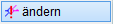")
")
Ändern der Lage, der Textangaben sowie der Spann- und Richtungslinien von statischen Positionen.
·Nach Auswahl des gewünschten Positionskreises wechselt ISBCAD automatisch in die Funktion [PosKre | zeichn]; Positionsnummer und Ergänzungstext werden dabei als Vorschlagswerte übernommen, alle anderen Werte (Linien, Platzierung, Ausrichtung) können neu angegeben werden.
·Das Ändern mehrerer Positionen in einer Übersichtstabelle ist mit der Funktion unterhalb der Abfrage möglich.
|
Achtung: Bereits abgelegte Positionstabellen werden nicht automatisch aktualisiert. |
|
Wenn die Zeichnung eine Positionstabelle enthält und Sie die Positionsnummer ändern, müssen Sie abschließend auch die Positionstabelle aktualisieren. |

1.Position wählen
Führen Sie einen der folgenden Schritte aus:
a)Klicken Sie die Positionsnummer oder den Ergänzungstext des Positionskreises an, den Sie ändern möchten. [Welcher Pos.Kreis].
Der Positionskreis wird komplett mit allen dazugehörigen Texten und Linien aus der Zeichnung entfernt. ISBCAD springt auf die Funktion [zeichn] um.
|
Tipps: |
|
·Bestätigen Sie die gültigen Angaben mit Rechtsklick. ·Während Sie Angaben ändern oder bestätigen, können Sie im Funktionsbereich den Darstellungsstil der Positionierung ändern, indem Sie eine andere Positions ID-Nr. auswählen. Die Vorschau wird bei jedem Wechsel angepasst. » Stile für statische Positionen definieren |

b)Klicken Sie unter der Abfrage auf die Schaltfläche , um mehrere Positionen zu ändern.
Öffnet den Dialog Statische Positionierung ändern/umbenennen zur weiteren Bearbeitung.
2.Positionsbereich und -bezeichnung angeben
Die Eingabefelder in der Abfrage enthalten die Angaben für den bisherigen Positionskreis. Falls Sie einen Positionskreis ändern möchten, der mit einer Diagonalen erstellt worden ist, werden die Koordinaten der Diagonalen, bezogen auf den Zeichnungsursprung, in die Eingabe geschrieben. Sie können die Position der Diagonalen beibehalten, indem Sie die Abfragen mit Rechtsklick bestätigen oder Sie klicken zwei neue Punkte an. Falls keine Diagonale gezeichnet werden soll, geben Sie in die Eingabe "-" ein und bestätigen Sie mit der Eingabetaste. [1. Diagonalpunkt (Wenn nicht, "-" eingeben].
§Klicken Sie zwei Punkte an, mit denen der Positionsbereich abgedeckt wird. [1.Diagonalpunkt, 2.Diagonalpunkt].
§Geben Sie unter Pos.Text den neuen Positionstext ggf. mit Sonderzeichen ein und bestätigen Sie mit der Eingabetaste.
Sie können auch einen vorhandenen Positionstext oder einen beliebig anderen Text anklicken, um diesen in die Eingabe zu übernehmen. Die Positionsnummer können Sie mit den Schaltflächen + oder - unter der Abfrage erhöhen oder verringern.
§Geben Sie unter Winkel die horizontale Ausrichtung des Positionstextes (in Grad) an und bestätigen Sie mit der Eingabetaste.

|
||||||


3.Symbol platzieren und Spannrichtungs- oder Zeigerlinien ändern oder entfernen
§Klicken Sie die Stelle an, an der das Symbol platziert werden soll. [Lage]
Die Zeichenmarke markiert die bisherige Lage des Positionskreises. Nutzen Sie unter der Abfrage die Funktionen [Endpunkte festhalten] oder [frei verschieben], um zuvor angegebene Spann- und Richtungslinien zu verschieben. Sie können zwischen den Funktionen wechseln. Die Vorschau wird bei jedem Wechsel angepasst. » Positionskreis verschieben
§Verwenden Sie die Optionen im Funktionsbereich, um Ausrichtung und Darstellung einzelner Linien einzustellen. [Linie]
Ausrichtungs- und Darstellungsoptionen
|
Ausrichtung der Spannrichtungs- und Zeigerlinien: Or an: orthogonal zu gedrehten Achsen. Or aus: unabhängig vom Winkel. Or Win: orthogonal zur Ausrichtung des Positionstextes. Wenn Sie die Spann- und Richtungslinien mit der Funktion [Or Win] "Orthogonal zu Text" gezeichnet haben [PosKre | zeichn], behalten die Linien bei der Angabe eines neuen Positionstextwinkels ihre orthogonale Lage zum Positionstext bei. |
|
Darstellung der Spannrichtungs- und Zeigerlinien: o.Pfei: ohne Pfeilspitze. Pfei.o: Pfeilspitze einseitig oben Pfei.u: Pfeilspitze einseitig unten. Pfei.b: mit Pfeilspitzen nach oben und unten. |
|
LgBel: beliebig lang. LgFest: mit konstanter Länge. Maßgebend ist die Länge der ersten Linie. |


Linien entfernen
–Um vorhandene Linien zu entfernen, klicken Sie auf –Um alle Zeigerlinien (außer der Diagonalen) zu löschen, klicken Sie auf |
 . Die Linien werden nacheinander entfernt.
. Die Linien werden nacheinander entfernt. unterhalb der Abfrage.
unterhalb der Abfrage.§Klicken Sie in der Zeichnung einen beliebigen Endpunkt (Spannrichtung/Bereich) oder Zuordnungspunkt (Zeigerlinie) an.
§Weisen Sie weitere Spannrichtungs- oder Zeigerlinien hinzu. Verwenden Sie ggf. vorab die Ausrichtungs- und Darstellungsoptionen.
§Beenden Sie die Linienangabe durch Rechtsklick.
Sie können jetzt einen neuen Ergänzungstext eingeben [Erg.Text] oder den Positionskreis durch Rechtsklick abschließend anlegen.
4.Ergänzungstext ändern
Der Ergänzungstext kann als einzelne Textzeile oder als mehrzeiliger Text bearbeitet werden, je nachdem wie er erzeugt worden ist. [Erg.Text (auch anklicken)].
Eine Kombination von freien Texten, Favoriten- und Makrotexten sowie den 10 zuletzt eingetragenen Texten ist in beiden Eingaben möglich. Die zuletzt eingetragenen Texte werden in der Auswahlliste Favoriten nach den definierten Favoritentexten angezeigt.
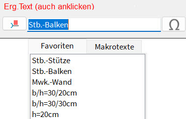
Einzelne Textzeile:
§Bearbeiten Sie den Ergänzungstext, indem Sie Zeichen hinzufügen oder entfernen. Sie können einen Text markieren und durch Eintippen eines neuen Textes, oder Anklicken eines Favoriten- oder Makrotextes, ersetzen. Bestätigen Sie mit der Eingabetaste.
Textübernahme:
§Nur bei einzelner Textzeile: Klicken Sie einen Text in der Zeichnung an, um diesen in die Eingabe zu übernehmen. Nach dem Anklicken des Textes gelangen Sie direkt zur Ausrichtung des Textes (Winkeleingabe). Mehrzeilige Texte können nicht übernommen werden.
Mehrzeiliger Text:
§Bearbeiten Sie unter aktueller Text zu Position... den Text. Mit der Eingabetaste fügen Sie einen Zeilenumbruch ein.
Um einen vorhandenen Text aus der linken Spalte an die Cursorposition zu setzen, doppelklicken Sie den Text an. Sie können den Text auch markieren und auf  klicken.
klicken.
§Geben Sie den Ergänzungstext ggf. mit Sonderzeichen  ein.
ein.
§Bestätigen Sie mit OK.

§Geben Sie unter Winkel die horizontale Ausrichtung des Ergänzungstextes an.
§Platzieren Sie den Ergänzungstext per Mausklick an der gewünschten Stelle. [Lage].
Die Bearbeitung des Positionskreises ist abgeschlossen. Sie können sofort einen weiteren Positionskreis anlegen. [1.Diagonalpunkt (Wenn nicht, ENTER drücken)].
Statische Positionen einzeln oder gruppenweise bearbeiten (Alle)
|
Achtung: Bereits abgelegte Positionstabellen werden nicht automatisch aktualisiert. |
|
Wenn die Zeichnung eine Positionstabelle enthält und Sie die Positionsnummer ändern, müssen Sie abschließend auch die Positionstabelle aktualisieren. |
Passen Sie in tabellarischer Form die Textergänzungen und Darstellung statischer Positionen an. Änderungen sind auf der Zeichenfläche sofort sichtbar. Die Spannrichtungslinien werden automatisch angepasst.
§Klicken Sie unter der Abfrage auf die Schaltfläche Alle. [Welcher Pos.Kreis].
Öffnet den Dialog Statische Positionierung ändern/umbenennen.
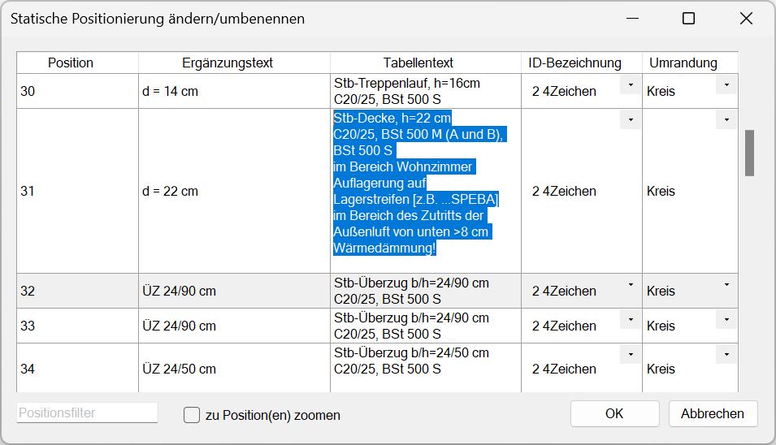
§Ändern Sie im Dialog die entsprechenden Angaben, indem Sie in ein Eingabefeld klicken und dieses bearbeiten und/oder aus einer Liste die gewünschte Eigenschaft wählen.
-Die aktuell markierte Position wird auf der Zeichenfläche in ihren Originalfarben angezeigt. Alle anderen Zeichenelemente werden in der Farbe für Elemente im Hintergrund angezeigt.
-Nicht editierbare Positionen werden grau hinterlegt. Das ist der Fall, wenn Positionen in ausgeblendeten Folien liegen oder gesperrt sind.
-Ergänzungstexte können nur editiert werden, wenn sie beim Erzeugen der Position angelegt wurden.
§Um eine Zeile einzufügen, drücken Sie die Umschalttaste + Eingabetaste.
§Bestätigen Sie Texteingaben mit der Eingabetaste.
§Rechtsklick auf einen markierten Text (Positions-, Ergänzungs- oder Tabellentext) öffnet das Kontextmenü. Sie können Texte ausschneiden, kopieren, einfügen und löschen.
-Positions- und Ergänzungstexte werden nach dem Ausschneiden/Löschen und dem Wechsel in eine andere Tabellenzelle wiederhergestellt.
-Das Verwenden der Mehrfachauswahl sowie der Tastenkombinationen Strg+C (Kopieren) und Strg+V (Einfügen) ist möglich.
-Mit Strg+X kann der Inhalt einer Zelle ausgeschnitten und in eine andere oder mehrere Zellen eingefügt werden.
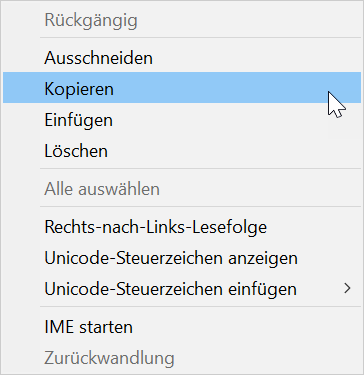
§Um Tabellentexte zu entfernen, markieren Sie die entsprechenden Zellen (s. "Auswählen von Tabelleninhalten" weiter unten). Drücken Sie entweder die Entf-Taste oder rufen Sie das Kontextmenü auf und wählen Sie Löschen bzw. Leeren.
§Bestätigen Sie die Änderungen abschließend mit OK.
Auswählen von Tabelleninhalten
Tabelle |
·Klicken Sie auf eine Zelle, um sie auszuwählen. ·Um benachbarte Zellen und Tabellenbereiche auszuwählen: -Klicken Sie eine Zelle mit der linken Maustaste an und halten Sie die Maustaste gedrückt. Ziehen Sie dann die Markierung über die anderen Zellen. -Halten Sie die Umschalttaste gedrückt und klicken Sie die erste Zelle an. Klicken Sie anschließend die zweite Zelle an, um den Tabellenbereich zwischen den angeklickten Zellen auszuwählen. ·Um nicht benachbarte Zellen und Tabellenbereiche auszuwählen, halten Sie die Strg-Taste gedrückt, und wählen Sie die Zellen aus. |
Zeichnung |
Klicken Sie in der Zeichnung den Positionstext der Position an, die Sie in der Tabelle markieren wollen. Nutzen Sie das Mausrad, um den Zeichenbereich, in dem die statische Position liegt, zu vergrößern oder zu verkleinern. |
Kopieren von Tabelleninhalten
Sie können einzelne Tabellenzellen, Zeilen oder Spalten ganz oder teilweise kopieren und in andere Zellen einfügen.
§Wählen Sie die Tabellenzelle(n) oder den Tabellenbereich aus.
§Drücken Sie zum Kopieren von Inhalten Strg+C, oder nutzen Sie das Kontextmenü und wählen den Eintrag Kopieren.
In der Tabelle werden kopierte Zellen farbig hinterlegt (nur bei mehreren Zellen).
§Klicken Sie die Zelle an, in die der Inhalt eingefügt werden soll. Sie können auch einen Tabellenbereich auswählen.
§Drücken Sie zum Einfügen Strg+V, oder nutzen Sie das Kontextmenü und wählen den Eintrag Einfügen, um den Inhalt in die Zelle oder den Tabellenbereich einzufügen.
§Um eine Änderung rückgängig zu machen, drücken Sie Strg+Z.
Beispiel: Zellen kopieren und einfügen |
|
|
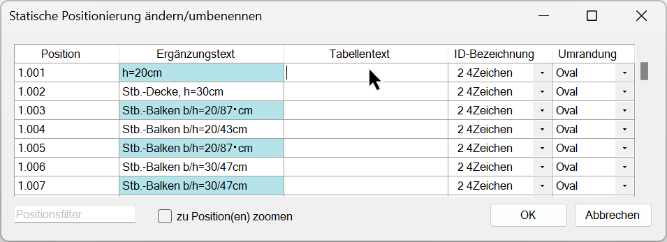 |
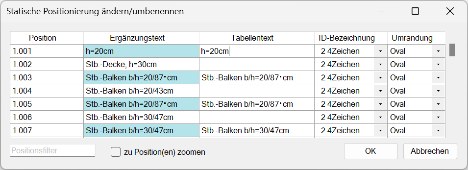 |
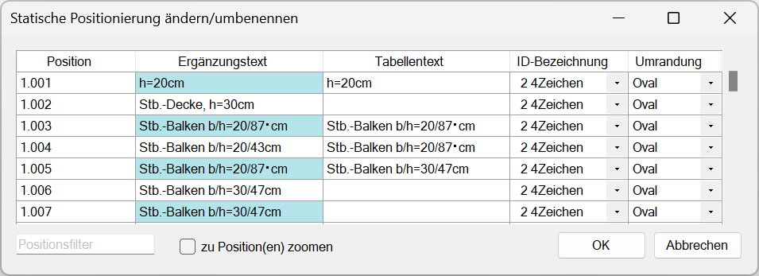 |
Die kopierten Inhalte sollen in die Zellen rechts daneben in die Spalte Tabellentext eingefügt werden. Klicken Sie dazu die Tabellentextzelle an, ab der die kopierten Zellen eingefügt werden sollen. |
Mit Strg+V werden die kopierten Inhalte in die benachbarten Zellen eingefügt. |
Es ist auch möglich, die kopierten Inhalte in bestimmte Zielzellen oder einen Zellenbereich einzufügen. Hier wurden die Zielzellen in der Spalte Tabellentext mit gedrückter Strg-Taste vor dem Einfügen ausgewählt. |
Ändern der ID-Bezeichnung oder Umrandung
Sie können die ID-Bezeichnung oder Umrandung einzelner Positionen ändern oder per Mehrfachselektion mit gedrückter Strg- oder Umschalttaste mehrere gelichzeitig ändern.
§Klicken Sie in der Zeile der Position auf , um eine Auswahlliste mit den ID-Bezeichnungen oder Umrandungen zu öffnen. Wählen Sie durch Anklicken eine neue Einstellung aus.
§Bei einer Mehrfachselektion klicken Sie auf des zuletzt markierten Eintrages. Wählen Sie anschließend durch Anklicken eine neue Einstellung aus, um sie auf die markierten Einträge anzuwenden.
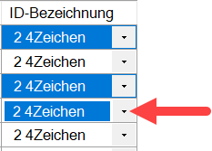 |
Verhalten bei Änderung des Positionstextes
Wenn Sie in der Spalte Position einen längeren Positionstext eingeben, wird die Positionsumrandung vergrößert und der zugehörige Ergänzungstext verschoben, damit es zu keiner Überlagerung kommt. Geben Sie anschließend einen kürzeren Text ein, rückt der Ergänzungstext bis zu seiner ursprünglichen Lage wieder an die Positionsumrandung heran. Wird die Positionsumrandung weiter verkleinert, behält der Ergänzungstext seine ursprüngliche Lage bei. Ebenso verhält sich der Ergänzungstext beim Ändern der Umrandung und der ID-Bezeichnung (Positionsstil-ID).
Ausgangssituation |
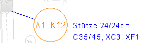 |
Positionstext verlängert. Der Ergänzungstext wird verschoben. |
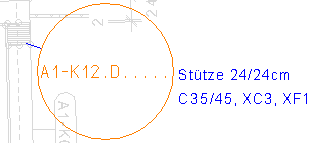 |
Positionstext verkürzt. Der Ergänzungstext behält seine ursprüngliche Lage (Ausgangssituation) bei. |
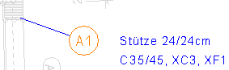 |
Verhalten bei Trenn- und Leerzeichen im Positionstext
Wenn Sie ein Leerzeichen in einem Eingabefeld der Spalte Position verwenden, wird der nach dem Leerzeichen eingegebene Text außerhalb des Positionssymbols geschrieben oder kann dieses überdecken. Nutzen Sie daher bei der Eingabe Trennzeichen oder andere Zeichen zwischen den Angaben, damit diese innerhalb des Positionssymbols geschrieben werden, und die Lesbarkeit gewährleistet wird.
Optionen im Dialog "Statische Positionierung ändern/umbenennen"
|
Hinweis: |
|
Wenn eine oder mehrere statische Positionen einer bestimmten ID nicht zugewiesen werden können, werden die Positionen mit ID-Nr. 1 gezeichnet. Dies kann zum Beispiel auftreten, wenn ältere Zeichnungen geöffnet werden. |

Dialogbeschreibung
Position
Liste aller statischen Positionen. Um die Positionsbezeichnung zu bearbeiten, klicken Sie die entsprechende Position an. Während Sie tippen, werden die Änderungen sofort auf der Zeichenfläche angezeigt.
Sie können die Positionen, die Ergänzungstexte und Tabellentexte entweder absteigend [ ] oder aufsteigend [
] oder aufsteigend [ ] sortieren. Klicken Sie auf den Pfeil, um die Sortierreihenfolge zu ändern.
] sortieren. Klicken Sie auf den Pfeil, um die Sortierreihenfolge zu ändern.
|

Ergänzungstext
Zeigt den zur statischen Position zugehörigen Ergänzungstext an. Klicken Sie in das Eingabefeld, um den Ergänzungstext zu bearbeiten. Der neue Text ist sofort in der Zeichenfläche sichtbar.
Tabellentext
Zeigt den zur statischen Position zugehörigen Tabellentext an. Klicken Sie in das Eingabefeld, um den Tabellentext zu bearbeiten. Aktualisieren Sie nach dem Schließen des Dialogs mit der Funktion [TabAkt] die Tabelle mit den Tabellentexten, damit die Änderungen sichtbar werden.
ID-Bezeichnung
Zeigt die im Dialog Einstellungen für statische Positionen [DefPos] zugewiesene Positions-ID-Nr.
Mit können Sie die Positionskreis-ID aus einer Liste wählen.
Umrandung
Zeigt die aktuelle Umrandungsform an.
Mit können Sie die Umrandungsform aus einer Liste wählen.
Positionsfilter
Suche nach bestimmten Positionen. Hier können Sie den vollständigen oder partiellen Positionstext angeben.
Mit dem folgenden Platzhalterzeichen können Sie Ihre Suche erweitern:
* (Sternchen): Steht für eine beliebige Zeichenfolge und kann an jeder Stelle der Suchzeichenfolge verwendet werden.
Beispiel: Die Eingabe A*C könnte zu diesen Suchergebnissen führen: A1C, A4C, A5C2 usw.
zu Position(en) zoomen
Vergrößert den Zeichenbereich, in dem die in der Tabelle markierte Position oder die markierten Positionen liegen.

Übernimmt alle Änderungen und schließt den Dialog.

Bricht die Bearbeitung ab. Falls Änderungen vorgenommen wurden, erscheint ein Dialog mit einer Rückfrage zum Speichern der Änderungen. Wurden keine Änderungen vorgenommen, wird die Tabelle geschlossen.
Wenn Sie Änderungen vorgenommen haben und den Dialog in der oberen rechten Ecke über das "X" schließen, erscheint ebenfalls ein Dialog mit einer Rückfrage zum Speichern der Änderungen.
Ja |
Übernimmt die Änderungen und schließt die Meldung sowie den Dialog. |
Nein |
Verwirft alle Änderungen und schließt die Meldung sowie den Dialog. |
Abbrechen |
Kehrt zum Dialog Statische Positionierung ändern/umbenennen zurück. Der letzte Bearbeitungsstand wird wieder aufgenommen. |
Siehe auch:
·Positionstabelle anlegen oder aktualisieren
Zugehörige Referenzen: